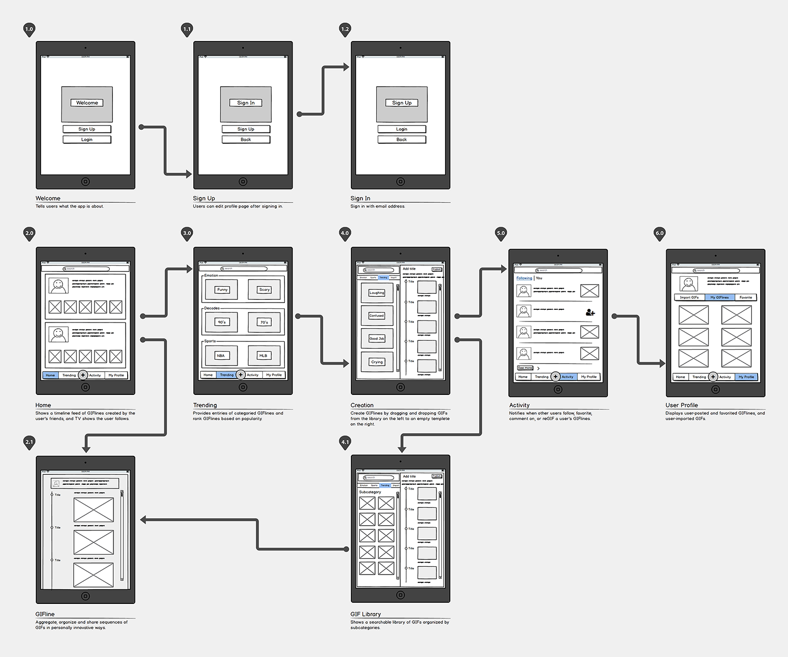
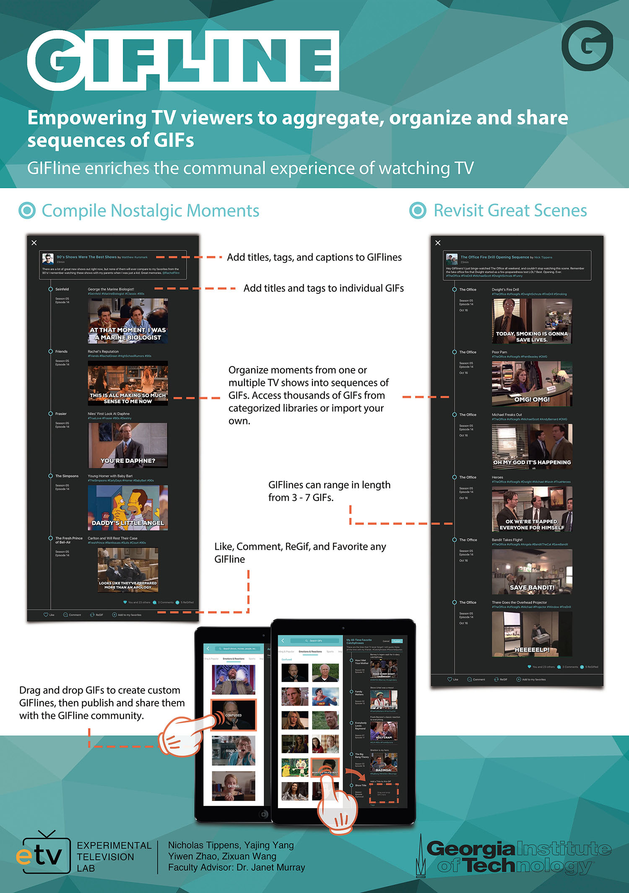
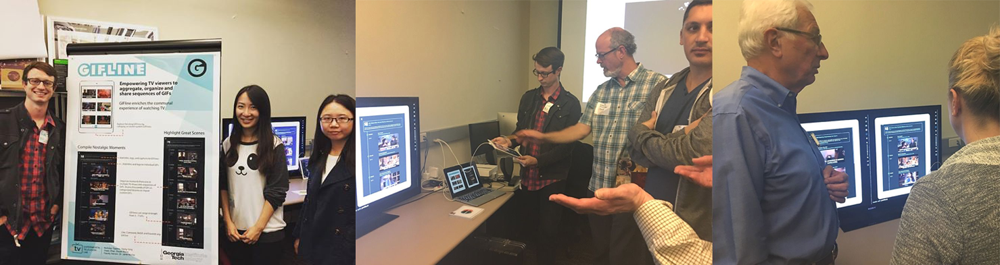

Introduction
GIFline is a social TV application that empowers viewers to aggregate, organize, and share sequences of GIFs. In doing so, GIFline enriches the communal experience of watching television.
Process

Interaction Design
Experimental Television Lab
010/2016 - 12/2016
Ethnography
Competitive Analysis
Wireframing
Balsamiq
Sketch
JavaScript
GIFline is a social TV application that empowers viewers to aggregate, organize, and share sequences of GIFs. In doing so, GIFline enriches the communal experience of watching television.
The lab project started with creating a second screen companion application to help audience immersed by storyworld when watching TV shows. After several rounds of brainstorming, we decided to focus on GIFs, because GIF has narrative potential to summary a moment.
Design space:
- GIFs have become an increasingly popular media format for quickly and effectively communicating thoughts and emotions across a diverse selection of online platforms.
- They are normally only allowed to send one GIF at a time on many popular social media platforms, compared to other format of contents.
We did primary user research, including ethnographic observation and contextual inquiry. We also did secondary research, such as literature review, technology probe, and competitive analysis. The objective was to figure out needs of audiences when they watch TV, and gain insight about gaps between comparatives and design space.
- Only one GIF is allowed at a time
While many of these platforms integrate individual GIFs into their functionality, there are currently no applications that harness the creative potential of GIFs arranged in sequence.
- No instant way to summarize a TV series by using scenes from the show
The common way to see the summary of a season of a TV show is from text or screenshots. There is no attractive or immersive way to see the key plot such as final battle or assassination.
At first, we did brainstorming about ideas that could address the two main findings for TV viewers without considering practical constraints. We listed out the advantages and disadvantages of each idea while making sure the platform we are about to design is providing a service that no other existing GIF service provider is offering.
Then, we made the decision that choosing the idea which is valid and feasible given the time limitation we have. During this phase, we, as a team, had heated discussions, eliminate currently unfeasible ideas, and finally hone in on the idea that the team feel the best about.
GIFline turns consumers into creators, empowering users to assemble sequences of GIFs that engage content in personally innovative ways.
GIFline provides access to categorized libraries of thousands of GIFS within the application, and users can also import their own.
To Create Stories, simply drag and drop individual GIFs into an empty GIFline template
Users are able to share the GIFlines via various social media platforms or either comment or favorite a GIFline.
To create GIFlines, users simply drag and drop individual GIFs into an empty GIFline template. GIFline provides access to categorized libraries of thousands of GIFS within the application, and users can also import their own.


Users can create GIFlines to revisit great scenes from their favorite shows, summarize plot threads within complex story webs, compile nostalgic moments from memorable decades, consolidate famous catchphrases by iconic characters, highlight unforgettable sports moments, and ultimately convey anything they want to through a series of GIFs.
We presented our project (initial design) during the Georgia Tech GVU Research Showcase. More than 200 guests, researchers, employers, classmates, and reputable professors came to our demo booth and heard about our design. They loved the idea and most of them even tried to create a GIFline by themselves during the demo but also, more importantly, they provided us many constructive feedback.
◦ Our GIFline layout was eye-catching.
◦ The GIF format is relevant, with GIFs being very popular right now.
◦ One major benefit of the application is the potential for enhancing the communication of emotion, particularly humor, already done by single GIFs.
◦ Make it possible to create custom GIFs with custom subtitles within the application. This would make it simpler for users to create GIFlines while they are watching TV shows.
◦ Allow users to import their own “homemade” custom GIFs created from video captured on their phone or personal recording devices. This would make it possible to create GIFlines out of home videos, Snapchat stories, Instagram videos, iPhone footage, and any other video content recorded by the user.
◦ Make GIFlines exportable to other social media platforms. (Example: Storify)
◦ Look into Copyright issues, and/or make it clear that the app’s functionality is to aggregate content rather than create new content and claim authorship of it, making it less threatening to those afraid of “stealing” intellectual property.
◦ Attempt to integrate giphy into our actual functional prototype by searching for the potential existence of a giphy API.
◦ Redesign of our GIFline creation functionality, to streamline it so that it requires the user to go through fewer screens in the process.
◦ More prominently feature custom GIF creation options even if they still take place in external apps and the custom GIFs are then imported into our application.
◦ Consider a way of prioritizing GIFlines in each category. Based on “engagement rate” or upvote/downvote button.